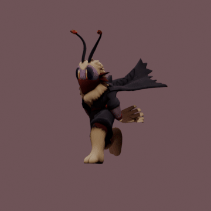
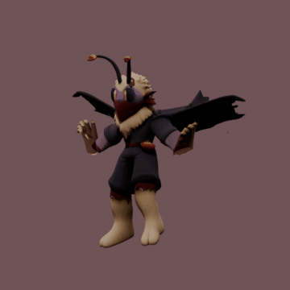
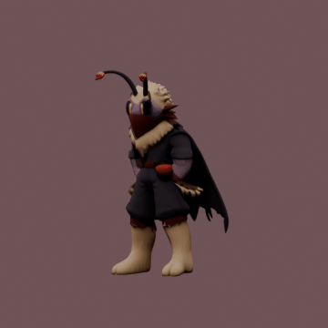
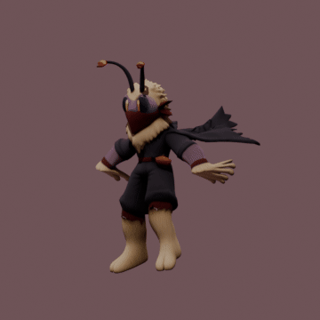
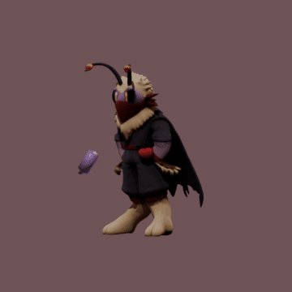
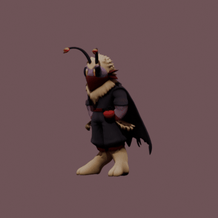
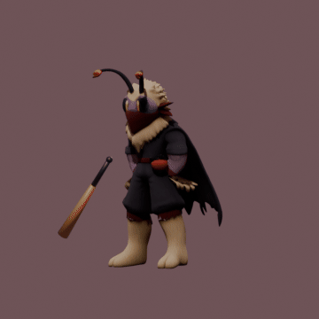
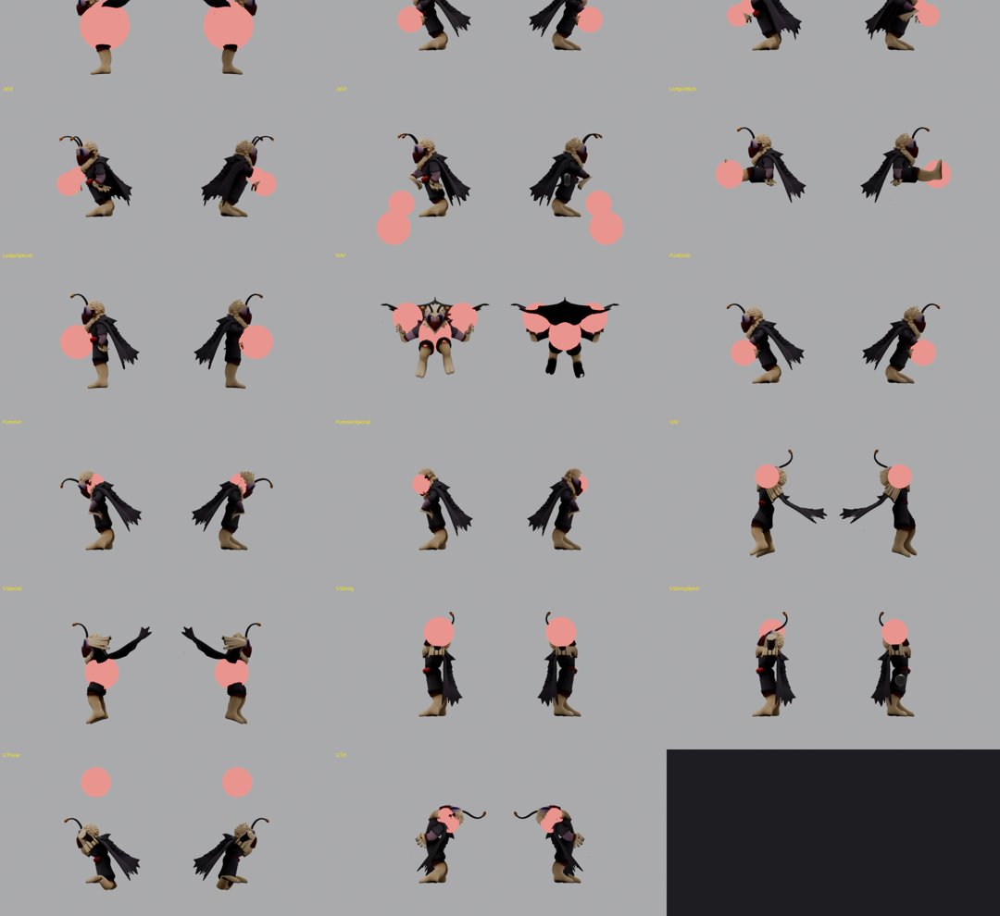

Mollo → R2
Giik's moth with the fuse antennae, rebuilt as a full 3D fighter for the Rivals 2 Workshop. Phase 1 is done on the Blender side: model, rig, 125 animations, 36 attacks with their frame data. Next is the Unreal Mod Kit, which is not installed yet.

The pipeline
Every step is a script, so changing a pose or a frame count rebuilds everything in about a minute. Green is done; orange needs the Mod Kit.
flowchart LR A[R1 key art
Steam Workshop] --> B[Grok concept
front + back A-pose] B --> C[TRELLIS
image to 3D] C --> D[rig_mollo.py
weld, skeleton, heat weights,
cape split by raycast] D --> E[props_mollo.py
4 props on own bones] E --> F[animer.py
poses, leg IK, visual bake] F --> G[spec_attaques.py
hitbox check renders + JSON] F --> H[exporter.py
SK + AN FBX] F --> I[textures.py
BC, N, ORMS] H --> J[Unreal Mod Kit
import, materials, HB_ capsules] G --> K[ATT_ assets
windows, hitboxes, on-hit] J --> K K --> L[Lua
bombs, fuse, flare aim,
jab spray, aerial charge] L --> M[Playtest] classDef done fill:#1f3326,stroke:#8fd19e,color:#efe4dc; classDef todo fill:#3a2a14,stroke:#ffb347,color:#efe4dc; class A,B,C,D,E,F,G,H,I done; class J,K,L,M todo;
Model
The concept was generated from the R1 key art, front and back in A-pose, in the stylized toon look of Rivals 2. TRELLIS built the textured mesh from both views. The result is turned 180° to face −Y as the docs require, scaled in Blender at unit scale 0.01, and stands on z = 0.


Rig
The skeleton copies the naming of the official reference rigs (Wrastor, Zetterburn): Root_M, Spine1_M, Shoulder_L, Hip_L, a free-floating Grab_M. Mollo adds three-segment antennae, a bandana tail, a 3×4 cape chain and one bone per prop. Getting clean deformation took four rounds; the problems are listed below.


Animation
Poses are written as data in axes anyone can read (X = his left, Y = his back, Z = up). The right side is mirrored from the left, grounded states run through leg IK so the feet stay planted, then everything is baked to plain bone curves for Unreal. This is the docs' "gameplay quality" pass: clear key poses and correct timing, not polished animation yet.







Covered: all the R2 movement states from the docs (ground, air, shield, dodges, hitstun, knockdown, ledge, getups, grabbed, items), the 4 bomb-strong variants, grabs, pummels and 4 throws. Mollo never had a grab in R1, so the throws are new designs.
Attacks
Frame data comes straight from the Rivals Academy YAML (patch 2.1.5.6): every animation lasts exactly the R1 frame count. The strike pose lands on the first active frame. Each hitbox sits on a bone with a radius in cm, then gets checked in a render from both sides.


Grab_M releasing the opponent.| Move | Frames (R1) | Damage | Angle | Landing lag | What it is in 3D |
|---|---|---|---|---|---|
| Ground | |||||
| Jab 1 · 2 · 3 | 5/2/12 · 2/3/16 · 8/loop/7 | 3 · 4 · 2×n | 40 · 65 · 30 | Left jab, right cross, flaming spray can on loop | |
| Dash attack | 6/4/27 | 4 | 40 | Shoulder slide; scoops up a grounded bomb on f9 | |
| F-tilt | 9/5/21 | 9 | 40 | Straight riot-boot kick | |
| U-tilt | 6/2·3/15 | 8 | 80 | Headbutt upward, fuse antennae whip | |
| D-tilt | 4/8/18 | 5 | 65 | Low sweep | |
| Air | |||||
| N-air | 6/4·6/11 | 2 + 5 | 55 | 6 | Spin with the cape wings open |
| F-air | 5/charge/4/4/24 | 9–14 | 310 | 12 | Chargeable diving dropkick |
| B-air | 6/6/23 | 8 | 130 | 9 | Double back kick |
| U-air | 8/5·5/21 | 3 + 6 | 100 · 90 | 6 | Two upward swipes, antennae on the second |
| D-air | 8/9/14 | 6 · 5 | 270 · 70 | 6 | Stomp: soles spike, shins pop up |
| Strongs (+60 f charge) | |||||
| F-strong | 12/3·3·3/30 | 3·3·6 | 20 · 45 | Left-right flurry, two-hand shove | |
| U-strong | 13/4·3·3·4/26 | 2·2·2·5 | 120 → 90 | Firework fountain overhead, 4 crackles | |
| D-strong | 12/3/40 | 7 · 5 | 90 · 75 | Double fist slam, center + sides | |
| Bomb tosses | 13/3/6 · 9/3/12 · 9/1/5 | 5 · 5 · 0 | 40 · 90 | When a bomb is held, strongs throw it charged | |
| Specials | |||||
| N-special | 4/12/2 | bombs | Pulls a bomb from the belt: ↑ cherry, ← firecracker, → flashbang, ↓ finisher | ||
| F-special | 21/aim/14/9 | 4 | 80 | Flare gun: aim a cursor, flare detonates bombs | |
| U-special | 14/4/30/13 | 4 + 2×5 | 90 | Rides a firework rocket, then pratfall | |
| D-special | 38/3/3/22 | 6 · 11 · 16 | 50 · 40 | Baseball bat; sweetspot at the tip | |
The full entry sheet with every hitbox, offset, radius, BKB/KBS and hitpause is in export/ATTAQUES.md, and as data in export/attaques_mollo.json. Knockback values are R1's as-is; they will need balancing in R2.
What went wrong, and how it was fixed
The mesh tore at every jointfixed
TRELLIS delivers a mesh split along its UV seams, so each island was skinned on its own. Welding the vertices before skinning (16k → 11.5k vertices) closed every tear.
Cape fused to the legsfixed
In a kick, the cape stretched into a sail between leg and floor. A distance threshold could not separate them because Mollo's legs are thick fur. Now a ray goes from each vertex toward the leg bone: if it crosses another surface first, the vertex is cape. 80 bridging triangles below the shorts are cut.
Leg bones outside the legsfixed
The legs sit at ±24 cm, not ±13 cm as I first estimated from the concept. The leg axis is now measured from the cream fur color in the texture.
Knees pointing sideways under IKfixed
A brute-force pole angle search gave 165° on one side and 0° on the other. Replaced by the analytic signed angle (−83° / −96°).
Rotation signsfixed
Upward bones (spine, head, antennae) and downward bones (legs, cape) lean in opposite directions for the same axis. The first crouch looked like sitting on a chair, and the run cape stuck out in front. The convention is now written at the top of the pose file.
Strikes landing latefixed
The hitbox check showed Jab 1 and the grabs hitting at belly height: the strike pose was keyed at the end of the active window. Strike poses now land on the first active frame.
Right arm convention, Grab_M, prop palettefixed
Three specials used the left arm's signs on the right arm. Grab_M was never animated, so a thrown opponent would not have moved. The props texture was lost because a generated image has to be packed to survive saving.
Bat held along the forearmopen
The bat points at the floor during the swing instead of across it. It needs a rotation on PropBat_R in the bat poses.
Ledge origin is a guessopen
The docs never say where the character's origin sits when hanging. I put it at the ledge corner with the body below. To verify in the editor against a base character.
Hitbox offsets are in Blender bone spaceopen
Unreal can swap bone axes on import, so offsets may need eyeballing per hitbox. The sheet gives the world position at the active frame for that.
Phase 2: in the Mod Kit
- Install the Rivals of Aether II Mod Kit near a drive root (
G:\R2ModKit), launch with Steam running, let shaders compile (up to an hour). - Create a new 3D Character Mod named Mollo, open the content folder.
- Reimport
SK_Mol_Default.fbxover the template skeletal mesh, thenAN_Mol_Default.fbx; import the 4 textures with their suffixes, makeMI_instances ofMAT_Cha_Standard. - Rebuild the
HB_physics asset with capsules only, assign animation states in the character data. - Fill the
ATT_assets from the entry sheet. If the editor's Python plugin is available, I can script this from the JSON. - Create the articles: 4 bomb types (holdable), the flare, then write the Lua for fuse timers, bomb selection, flare aim, spray can and aerial charge, using the in-editor Lua docs.
What I need from you
Install the Mod Kit when you can, and tell me the path. Once it's there I can read the Lua API docs and the engine's class names from disk, which I can't get from the website.
The Steam Workshop subscription to Giik's Mollo (1871989159) hasn't downloaded yet. Its GML is the exact source for the fuse and bomb logic in phase 2.
This build stays private: Mollo belongs to Aether Studios and Giik.
Files
Sources: Rivals 2 Workshop docs · Rivals Academy, Mollo · Mollo on the R1 Steam Workshop